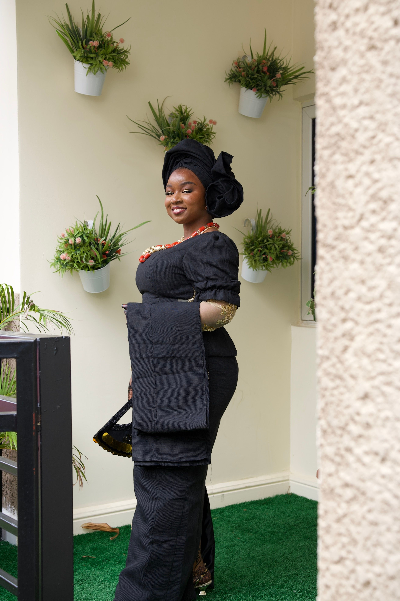
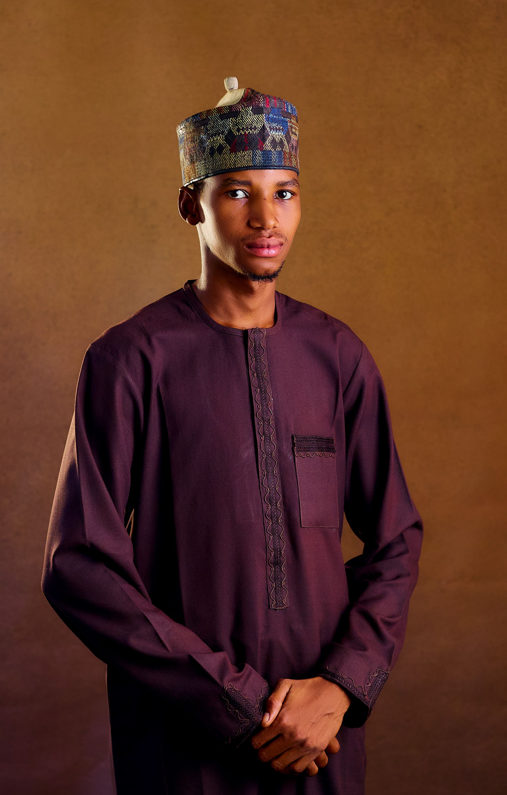

October 18 to 22 · Lagos
Lagos Fashion Week 2026
Runway shows, presentations, retail events and industry conversations across the city.
Find fashion weeks, workshops, exhibitions, trunk shows, school showcases and business events across Nigeria.
Runway shows, presentations, retail events and industry conversations across the city.



A curated presentation of designers working across kaftans, agbada and contemporary tailoring.
August 9 · Balogun, Lagos
August 23 · Abuja
September 14 · Benin City
Every Thursday · Online